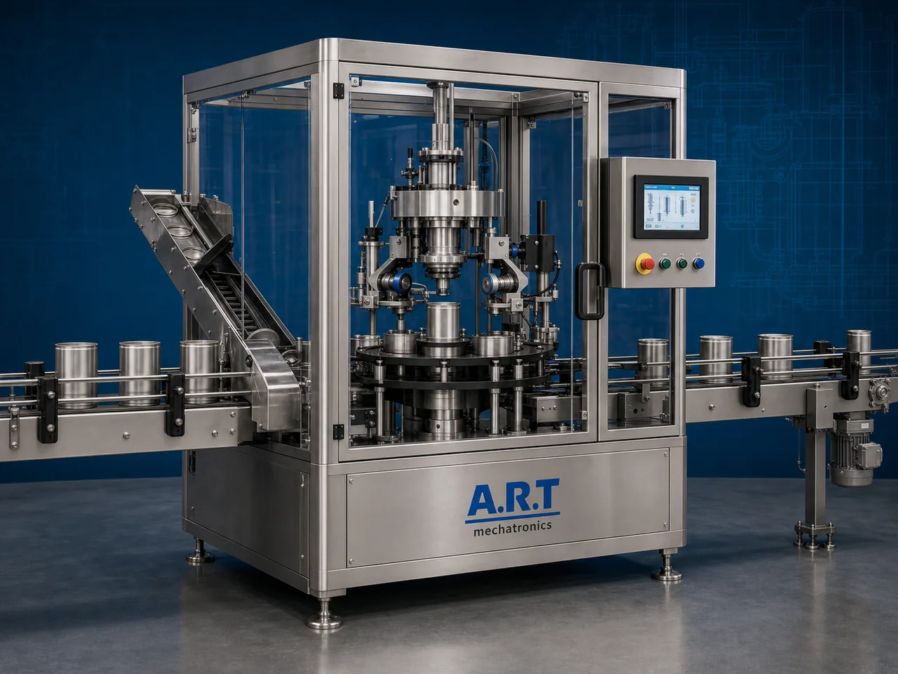

Seaming Machine (Automatic Can Seaming & Container Sealing System)
A Seaming Machine, also known as a Can Seaming Machine, Can Closing Machine, Container Sealing Machine, or Automatic Can Lid Sealing System, is an advanced industrial packaging solution designed for automatic lid placement, double seaming, airtight sealing, vacuum sealing, nitrogen flushing, coding, and high-speed container sealing operations for tin cans, metal containers, aluminium cans, food cans, beverage cans, powder containers, and premium retail packaging applications.

About the Seaming Machine
Seaming systems are widely used for:
- Tin can sealing
- Metal container seaming
- Food can packaging
- Beverage can sealing
- Powder can packaging
- Tobacco can sealing
- Airtight retail packaging
- Moisture-protected container packaging
The machine improves:
- Airtight sealing quality
- Product shelf life
- Moisture protection
- Packaging consistency
- Product safety
- Production efficiency
- Retail packaging quality
Industrial seaming machines use:
- Automatic can feeding systems
- Servo synchronized seaming systems
- PLC and HMI automation controls
- Precision double seaming rollers
- Lid placement and sealing mechanisms
to automatically seam and seal cans with superior sealing integrity and high production efficiency.
Seaming machines are widely used in industries such as:
Food processing industries Beverage industries Tea industries Coffee industries Spice industries Tobacco industries Confectionery industries FMCG industries
where airtight packaging, leak-proof sealing, and long shelf life are essential.
The machine is highly suitable for:
- Food can sealing
- Beverage can seaming
- Powder container sealing
- Tobacco tin packaging
- Spice can packaging
- Premium retail can packaging
ART Mechatronics offers high-performance seaming machines, engineered for continuous industrial operation, accurate lid sealing performance, hygienic packaging quality, and reliable long-term packaging automation.
Working Principle of Seaming Machine
- 1. Filled Can Feeding Filled cans or containers are automatically fed into seaming section through synchronized conveyor systems.
- 2. Lid Placement Process Machine automatically positions lids onto cans before sealing operation.
Servo synchronization ensures accurate lid positioning and smooth container handling.
- 3. Double Seaming & Sealing Operation Machine handles: ✔ Tin cans ✔ Metal containers ✔ Aluminium cans ✔ Powder cans ✔ Beverage cans ✔ Food cans ✔ Tobacco tins
accurately and continuously.
- 4. Airtight Sealing Process Machine performs: Double seaming Leak-proof sealing Vacuum sealing (optional) Nitrogen flushing (optional) Hermetic sealing
for hygienic and moisture-protected packaging quality.
- 5. Coding & Inspection Integration Optional systems include: Batch coding Date printing QR code printing Vision inspection Leak testing systems
- 6. Finished Can Discharge Finished sealed cans discharged automatically for: Cartoning Case packing Retail distribution Export shipment handling
Types of Seaming Machines
- 1. Automatic Can Seaming Machine Designed for: ✔ High-speed industrial can sealing applications
- 2. Vacuum Seaming Machine Suitable for: ✔ Vacuum-packed food and beverage packaging systems
- 3. Nitrogen Flushing Seaming Machine Uses: ✔ Oxygen-sensitive product packaging systems
- 4. Powder Can Sealing Machine Designed for: ✔ Powder and dry product packaging systems
- 5. Servo Driven Seaming Machine Suitable for: ✔ Precision high-speed sealing operations
- 6. Fully Automatic Container Seaming System Designed for: ✔ Complete industrial packaging automation lines
Industries Using Seaming Machines
🍃 Food Processing Industry Processed foods, ingredients, snacks, and premium food can packaging systems. 🥤 Beverage Industry Energy drinks, juices, flavored beverages, and liquid can sealing systems. 🌶️ Spice Industry Masala products, seasoning products, and spice can packaging systems. 🚬 Tobacco Industry Shisha tobacco, oral nicotine products, and tobacco tin sealing systems. ☕ Tea & Coffee Industry Tea powders, coffee products, and aroma-protected can packaging systems. 🛒 FMCG Industry Consumer product premium retail can packaging systems.
Features & Advantages
- High-speed automatic can seaming operation
- Strong and airtight sealing quality
- Hygienic and leak-proof packaging systems
- PLC and servo automation control systems
- Improves product freshness and shelf life
- Reduces packaging wastage and labor dependency
- Supports multiple can sizes and container formats
- Reliable long-term industrial performance
- Smooth and continuous packaging operation
Technical Highlights
Machine Type: Automatic seaming machine Industrial can sealer Container sealing system Packaging Material: Tin cans Metal cans Aluminium cans Decorative metal containers Sealing Integration: Double seaming systems Vacuum sealing systems Nitrogen flushing systems Features: PLC control system Servo synchronization Touchscreen HMI Batch coding integration Automatic lid placement Sealing Type: Double seam sealing Hermetic sealing Leak-proof sealing systems Automation: Semi-automatic Fully automatic industrial systems
Turnkey Seaming Solutions
ART Mechatronics offers: Complete can seaming systems Automatic container sealing solutions Packaging automation integration systems Conveyor synchronization systems Installation & commissioning After-sales service & AMC
Why Choose Art Mechatronics
Expertise in industrial packaging and automation systems Customized seaming solutions for multiple industries High-performance and durable sealing technology Advanced PLC and servo automation systems Proven industrial packaging performance across sectors
Applications
Food Processing Industries Beverage Manufacturing Plants Spice Packaging Facilities Tobacco Manufacturing Plants Tea & Coffee Industries Premium FMCG Packaging Units
Industries that use the Seaming Machine
Get pricing & specs for the Seaming Machine
Share the product, target capacity, current process and plant location. These details help our engineers discuss the right machine or line configuration.
One partner, from design to start-up
ART Mechatronics designs, manufactures, installs and commissions your Seaming Machine solution with regional presence in India, UAE and Thailand.